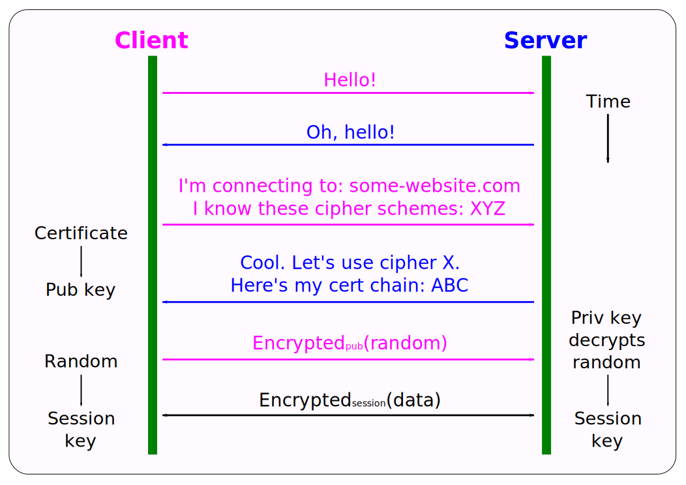
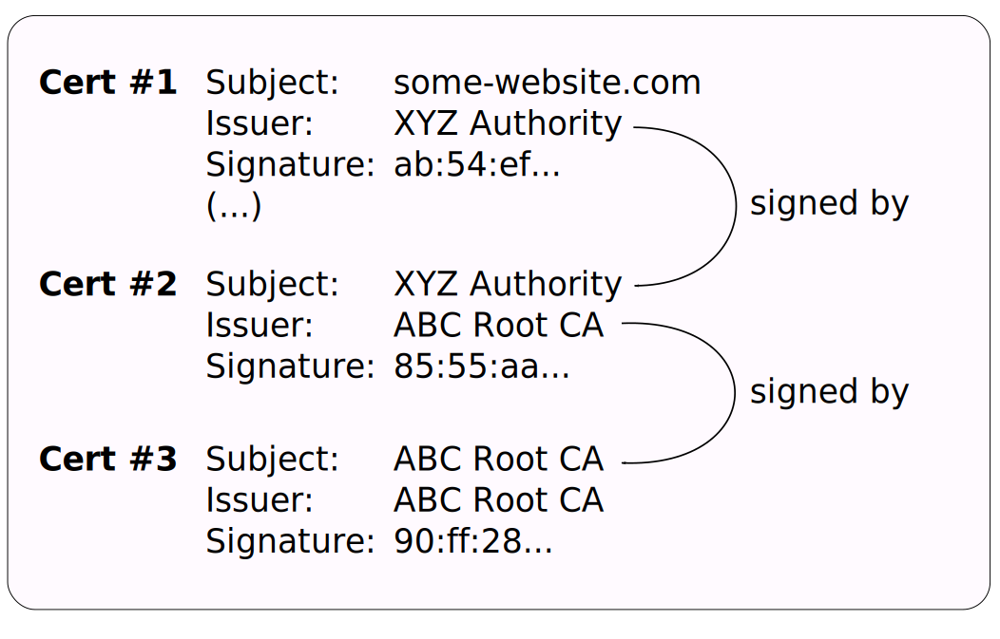

Let's Encrypt (is super!)
Peter Rogers (peter.rogers@gmail.com)
October 2018
What is Let's Encrypt?
Let's Encrypt is a certificate authority that grants free digital certificates via an easy-to-use, automated process.
- Digital certificates allow for secure communication with websites (HTTPS)
- A certificate authority (CA) issues, manages, revokes digital certificates
- Very friendly documentation (https://letsencrypt.org/)
What is Let's Encrypt? (cont.)
- Where it's different: Let's Encrypt provides a free, easy and automated way of issuing certificates
- Project was started in 2012 by two Mozilla employees, a member of the EFF, and a prof from U of Michigan
- Created in the context of Edward Snowden's revelations
- Huge success: over 100 million certs issued
What are digital certificates?
Digital certificates and the certificate authority system underpin the security of the modern internet. They provide:
- Secrecy (your communications are private)
- Integrity (your communications can't be tampered with)
- Authenticity (you know who you are communicating with)
What do certificates look like?

Viewing certs in Firefox
- Right-click on a page and click View Page Info
- Click Security then View Certificate
What is certificate authority (CA)?
- It's an organization/business that entrusted with the authority to grant digital certificates
- Certificates are cryptographically signed by a CA
- That signature implies that the contents of the certificate can be considered trustworthy
What is certificate authority? (cont.)
Why use a CA?
- A server can issue self-signed certificates, without needing a CA.
- Self-signed == server is vouching for itself.
- That provides secrecy and integrity, but only to the party controlling the certificate.
- The authenticity of the certificate (eg is it actually controlled by the site you connected to) cannot be assured.
How does it all fit together?
How does it all fit together? (cont.)
Why bother?
https://www.theregister.co.uk/2018/05/23/vpnfilter_malware_menacing_routers_worldwide/
Why bother? (cont.)
Why bother? (cont.)
The take away?
"The network is hostile." --Matthew Green
https://blog.cryptographyengineering.com/2015/08/16/the-network-is-hostile/
How does Let's Encrypt work?
- Certbot (https://certbot.eff.org/) is the recommended client
- A server you own (example.com) contacts the Let's Encrypt server
- Server issues a challenge (say HTTP challenge)
- The HTTP challenge asks the client to create a resource on its HTTP server (/.well-known/acme-challenge/token) that contains the client key authorization (made from the challenge token, and account key)
- The created resource is secret and only the server should know about it (so another host can't just guess the resource path and duplicate the secret)
Demo
Summary
- A digital certificate allows for secure communication on the internet
- X.509 describes the certificate format
- A certificate authority (CA) issues certificates
- Security is based on a chain of trust/root trust model
- Let's Encrypt provides free, easy, automated certificate management
- Also: Let's Encrypt is super!
It's over!
Links & references
- https://letsencrypt.org/
- https://certbot.eff.org/
- https://www.schneier.com/blog/archives/2015/08/nsas_partnershi.html
- https://klen.wikipedia.org/wiki/Room_641A
- https://theintercept.com/2018/06/25/att-internet-nsa-spy-hubs/
- https://ietf-wg-acme.github.io/acme/draft-ietf-acme-acme.html
/